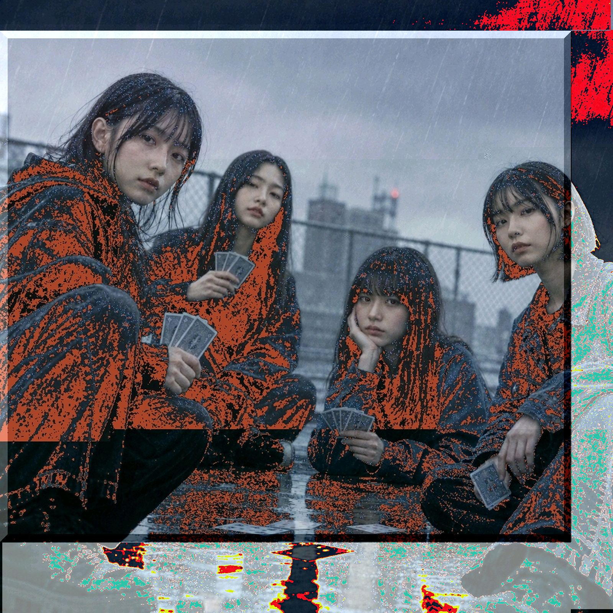

大貧民と革命を
lyrics
雨が降っても遊ぶんだ
風がビュービュー吹いてるからさ
今日はみんなでトランプだ
ルールは 僕らの手の中
エースよりもナンバー２だ
四枚集めて 革命だ
jokerは 誰の手のなか
ルールは 僕らの手のなか
自作のruleも 楽しきゃいいぜ
でもやり過ぎたら喧嘩になるぜ
神様もきっと見ているからさ
今の無し とか
言っちゃダメだぜ
謎のロジックで 8切りだ
革命に 革命返しだ
ルールをもっと増やすんだ
ルールは 僕らの手のなか
日が沈んでも続くんだ
勝利のディナーは まだ先だ
誰かが泣くまで続くんだ
ルールは僕らの手のなか
一発逆転ごぼう抜き
チャンスがあるから続くんだ
勝ち逃げなんて ダセーだせー
お前のブランド 泣いてるぜ
こっそりイカサマ バレなきゃいいぜ
でも気をつけろ みんな見ているぜ
バレたらたぶん仲間はずれ
それじゃもう
遊べなくなるぜ
雨が降っても遊ぶんだ
regulatory に capture されんな
今日もみんなであそぶんだ
ルールは僕らの手のなか
革命だって叫んだ僕ら
また遊ぼうねの意味だった
誰かが泣いても続けるか
ルールは僕らの手のなか
ruleで僕ら 遊んでんだ
飽きてやめるまで続くんだ
ルールはルールだ ルールるるー
みんなが泣いても続くんだ
notes
ストレートな曲調に、ストレートな歌詞。風がビュービューとか。というか、そのまんまのことしか書いてないね。
今まで散々ファストファッションの文脈でのし上がった奴が、さらにファストな奴が出て来て追い上げられたからって急にブランドヅラ始めんのはどうなのかってことよ。訴えたってどうするの。
そもそもルールというものは、強者が勝ち続ける為のものであってはならないのでは？バランス調整失敗では一気にサービス終了ですよ。大きいモノを縛る=全員に希望を与えるものでなくてならないと。憲法とはそういうものだって小さい頃に習ったような気もするんだけどね。あ、やばい、憲法がーとか言うとアレだね、つーかトランプの話だった。大富豪のね。ババ抜きとか。
そこにいるプレイヤーが円滑に進めるためにルールが存在するのなら、やっぱり主体はルールではなく、そこにいるプレイヤーなんだよ。
だからさ、こんなのいうのもアレだけどさ、一言だけ言っていいかな？いや、独り言なんだけどさ、それに後出しかも知んないけど…。
「…そんなルール聞いてないよ。」